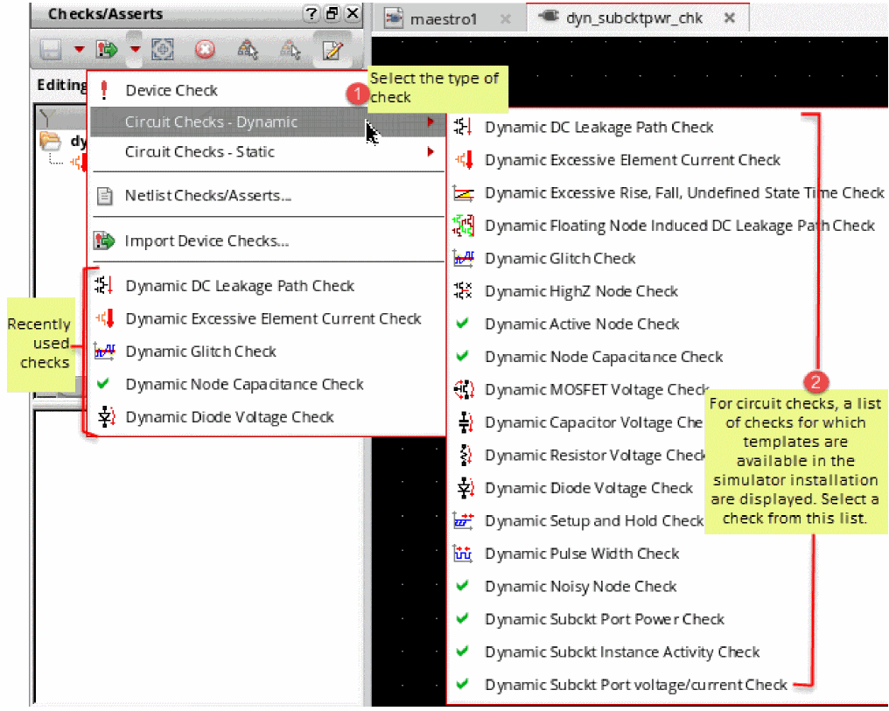

13
Performing Circuit and Device Checks
ADE Assembler provides an interactive user interface where you can define circuit or device checks that are performed using the simulation results. The violations of these checks are highlighted on the Checks/Asserts view on the Results tab. You can view and analyze the violations by using the various features of this view, such as, filtering violations using the built-in or custom filters, finding the critical instances or nets on the schematic, or highlighting the violation results on the waveforms. Next, waive or resolve the violations as per your requirements, and rerun simulations to verify the results.
This chapter describes how to use the tools and features in ADE Assembler to perform circuit and device checks, and to resolve violations:
- An Introduction to Checks and Asserts
- Adding Checks and Asserts
- Filtering Violations
- Running Simulations and Viewing Violations
An Introduction to Checks and Asserts
This section provides an introduction to the types of checks supported by ADE Assembler. It also introduces the Checks/Asserts tree in the Data View assistant pane.
Checks
Checks (or circuit checks) enable you to analyze typical design problems, such as high impedance nodes, leakage paths between power supplies, setup and hold timing errors, power issues, connectivity problems, or extreme rise and fall times.
Circuit checks are of two types shown below.
For more details on the circuit checks that can be performed by the Spectre simulator, refer to
Asserts
Asserts (or device checks) are used to perform checks on design parameters, node voltages, element currents, model parameters, operating point parameters, and expressions. In Spectre, the assert and checklimit statements are used to define and run device checks.
For details and examples on the device checks that can be performed by the Spectre simulator, refer to
Dependency on Simulators
In ADE Assembler, you can perform all the circuit and device checks that are supported by the MMSIM 14.1 ISR11 or later releases. The checks should be defined using the required syntax and keywords, and can include wildcard characters, subcircuits, and instance scoping. Spectre writes the results of these checks into the SQLite database in XML format. ADE Assembler reads that data and displays it in tabular format on the Results tab.
Setting up Checks and Asserts Analysis
-
Select and expand Checks/Asserts in the Data View assistant of ADE Assembler.
All tests defined in the current maestro cellview are displayed under this node. By default, the check boxes for all tests are deselected. Tests that are disabled in the Tests node are disabled in this tree as well.If the enableDochecklimitFromDataView environment variable is set tot, the tool automatically updates the dochecklimit check box on the Checks tab of the Simulator Options form for the enabled tests under the Checks/Asserts node in the Data View assistant. - In the Checks/Asserts node, select the check boxes next to the tests for which you want to enable all the defined checks.
- Expand the tree for a selected test.
-
Expand the Cellviews node under that test node to view the names of the schematic cellviews in that tests.
For each schematic cellview, the tool displays the total count of checks and asserts defined in that schematic.
- If the number of cellviews in your design is large, use the commands in the context menu of the Cellviews node to show or hide only those cellviews that contain checks:
- Select or clear the check boxes next to the schematic name for which you want to include the checks in the analysis.
You can define checks for cellviews in the Checks/Asserts assistant. For more details, see Adding Checks and Asserts.
Adding Checks and Asserts
Checks can be added in the following two ways:
- By using the Checks/Asserts assistant in the Virtuoso Schematic Editor window
- By copying the Checks/Asserts from One Cellview to Another
- By importing asserts from included text files
- By defining global device checks using the Device Check Options form
While you are adding checks and asserts in the Checks/Asserts assistant, you can also verify how they will be added to the netlist to be used in simulations. For details, see Viewing Netlists for Checks and Asserts.
Adding Checks using the Checks/Asserts Assistant
To add checks for a test, perform the following steps:
-
In the Data View pane, expand the Checks/Asserts tree.
The names of all the tests defined in the current view are listed in this tree. - Expand the test tree for which you want to define checks.
- Click Click to edit checks.
The schematic view of that cell is opened in a new tab.
By default, the Checks-Edit workspace is opened. This workspace shows the Checks/Asserts assistant pane on the left.
To add new checks for this test, perform the following steps:
-
In the Checks/Asserts assistant, click the checks
 drop-down list, and choose the type of check you need to create. For example, Circuit Checks – Dynamic. If the drop-down list is disabled, ensure that the constraints view is editable. If not, use the Make Editable command in the Checks/Asserts assistant, as shown below.The list of dynamic checks for which templates are available in Spectre are shown in the submenu.
drop-down list, and choose the type of check you need to create. For example, Circuit Checks – Dynamic. If the drop-down list is disabled, ensure that the constraints view is editable. If not, use the Make Editable command in the Checks/Asserts assistant, as shown below.The list of dynamic checks for which templates are available in Spectre are shown in the submenu.
The check is added to the list of constraints in the Checks/Asserts assistant. Its corresponding parameters are displayed in the constraint parameters pane.
There is no list of checks for Device Check. For this type of checks, you can directly provide parameters in the Editor pane.Any custom or default system constraint created in the Constraint Manager assistant can be propagated automatically to the Checks/Asserts assistant. For information about how to enable the automatic propagation, see Propagating Constraints to the Checks/Asserts Assistant in Virtuoso Unified Custom Constraints Configuration Guide. -
Move the pointer over a check name in the top area of the assistant to view its definition and parameters in a tooltip.
-
Edit the check parameters as required. You can define the scope for a check by setting the Node, Device, and Inst fields.
Either type the names of nodes, devices, and instances, or directly select these from the schematic.
To apply a check for all the nodes or instances, enter
*in the respective field.
If a field value for a parameter is unchanged, it will use the default values for that parameter as defined in the simulator file. The default values can be found in two ways: - Repeat steps 1 to 3 to add more checks.
-
Click Save in the toolbar to save the checks. It is required to save the checks to ensure they are netlisted correctly. If you run simulation without saving changes in the constraints view, ADE Assembler displays a message and prompts you to save changes.The Checks/Asserts — <testName> — Cellviews tree lists all the cellviews contained in the design under test. The numerical value next to each cellview shows the count of checks defined for each. To edit the checks for a cellview, right-click it and choose Edit Checks. The cellview is opened in the schematic view where you can add or edit checks in the Checks/Asserts assistant.An example displaying a circuit check and a device check is shown below.
 The checks and asserts defined for a cell using the Checks/Asserts assistant are stored in a special partition of the constraint view for the cell. These checks will be netlisted using the subcircuit parameter to keep the scope of the check to the cellview in which it is created. These checks are included in the simulation whenever that cell is instantiated in a design.
The checks and asserts defined for a cell using the Checks/Asserts assistant are stored in a special partition of the constraint view for the cell. These checks will be netlisted using the subcircuit parameter to keep the scope of the check to the cellview in which it is created. These checks are included in the simulation whenever that cell is instantiated in a design.
Copying Checks or Asserts
If the check or assert you need to create for a cellview already exists for another cellview instantiated in the design, you can copy that and customize it, if required.
To copy a check or assert, perform the following steps:
-
Right-click the source cellview from which you need to copy the check or assert, and choose Edit Checks.
The constraint view of the cellview is opened in a new tab and the checks/Asserts assistant is displayed. -
Right-click one or more checks and asserts to be copied and choose Copy Checks/Asserts from the context-sensitive menu.
The copied check or assert is saved in the memory. - Reopen the maestro cellview tab.
- Right-click the cellview to which you need to copy or reuse the copied check or assert, and choose Edit Checks.
- The constraint view of the target cellview is also opened in a new tab and the Checks/Asserts assistant is displayed
- Ensure that the constraint view is editable. If not, click Save Checks/Asserts – Make Editable.
-
Right-click anywhere in the checks/asserts pane and choose Paste Checks/Asserts.
The copied check or assert is added to the cellview. You can view and edit its parameters in the parameter editor pane of the Checks/Asserts assistant.
Importing Asserts from Text Files Included in the Setup
If you have defined device checks or Spectre asserts in model files, you can include those files for a test.
To import device checks, perform the following steps:
- In the Data View pane, expand the Tests tree.
-
Right-click a test and choose Model Libraries.
The Model Library Setup form is displayed. -
Click
<Click here to add model file>to view the Browse button. -
Click Browse and select a model file that contains the definitions of device checks.
-
(Optional) If you want to view or edit the asserts, select the name of the model file and click Edit/View Selected Files.
- Click OK to apply the changes and close the form.
The asserts included from the model file will now be included in the netlist and used in simulation runs.
Defining Global Device Checks
Using the Device Checking Options form, you can specify the global device check options, such as start and stop times for a transient analysis and default severity for various Spectre analyses.
To open the Device Checking Options form:
-
Right-click a test and choose Options – Analog from the context menu.
The Simulator Options form appears. For more information about how to use this form, see Setting Spectre Options. - Open the Check tab.
- Select the yes check box for dochecklimit to enable device checks.
-
Click the Options button available at the bottom of the Check tab.
The Device Checking Options form appears, as shown in the figure below.

When you open this form, the Transient tab is open by default. You can also use this form to specify the global device check options for various analyses.
The following fields are displayed on the Transient tab:
- Start Time for Device Checks–Specify the beginning time at which device checks are to be enabled or disabled for transient analyses.
- Stop Time for Device Checks–Specify the end time at which device checks are to be enabled or disabled for transient analyses.
-
Severity–Select the default severity level for the message that is displayed when Spectre reports violations for the device checks that are enabled for transient analyses. The available options are: None, Error, Warning, Notice, and Fatal.
The specified severity level overrides the severity level specified for individual checks in the Checks and Asserts assistant. - Check Windows–Specify the time windows when device checks will be enabled. In the Begin and End columns, specify the begin and end times for each time window, one per line in the table.
-
Enable All Checks–Select this check box to enable all the device checks for transient analyses.
- Disable All Checks–Select this check box to disable all the device checks for transient analyses.
The remaining tabs, DcOp, Dc, Ac, Sp, Noise, and Pz, include only three fields as shown in the figure below:
Viewing Netlists for Checks and Asserts
While you are creating or editing checks and asserts in the Checks/Asserts assistant, you can also view how they will be added to the netlist for simulation. You can do this in two ways:
- Viewing netlist statements for all the checks/asserts in a text window
- Viewing the netlist preview for an individual check in the tooltip
Viewing netlist statements for all the checks/asserts in a text window
You can generate the netlist for all the checks and asserts defined at the current design hierarchy level by using the Netlist Checks/Asserts command in the Device Check drop-down menu on the Checks/Asserts assistant toolbar. This command opens a netlist window that shows all the checks defined at the current level.
For each design level, you need to run this command separately to view the netlist at that level.
Viewing the netlist preview for an individual check in the tooltip
To preview the netlist for a single check, move the mouse over the check name in the Checks/Asserts assistant. A tooltip will be displayed where you can view the netlist statement.
If the netlist for a particular check at the subcircuit level is not valid, appropriate warnings are displayed, as shown below.
Next Steps
After creating circuit checks, the next steps are to:
- Define violation filters and specifications on the Outputs Setup tab
- Run simulations
- View violations on the Results tab
Filtering Violations
Violation filters provide a way to visualize the different metrics for checks, such as the number, duration, or any user-specified categories of violations. Each violations filter can have its own specification and is treated like any other output.
To create a violation filter, perform the following steps:
-
On the Outputs Setup tab, click Add new output — <testName>— Violation Filter to add a new output to show violation filters for checks or asserts.
A new row is created with its type set asviolations. - Enter a name in the Name column for the violation output.
-
Double-click the Details column for this row.
The following three drop-down lists are displayed:-
The first drop-down list is the type of operation you want to perform. For example, you can select
Countto count the number of violations. Other operations available in this drop-down list areAvg,Min,Max, orSum. -
The second drop-down list specifies the field you want to access within the violation result. For example, for the Avg such as Duration or PeakValue. If the first value is
Count, the second value defaults to*. Otherwise, the choices in the second list vary depending on the item select in the third list. -
The third drop-down list shows the list of checks defined for the test. Choose a check on which you want to run the operation selected in the first drop-down list. You can select an individual violation type, for example,
Dynamic HighZ Node Checkor a grouped category, such asDynamic ChecksorAll Checks/Asserts. The second list of fields is updated depending on the selection in this list.
-
The first drop-down list is the type of operation you want to perform. For example, you can select
-
Select values from the drop-down lists to build an expression for the violation filter.
Example expressions: - Add a specification for the violation in the Spec column for the output.
.cadence directory.Running Simulations and Viewing Violations
After adding checks in the Checks/Asserts assistant and defining violation filters in the Outputs Setup pane, you can run a simulation to run the checks on the simulation results. After the simulations of all points and corners are complete, the Detail results view shows a consolidated report of the violation filter expressions defined in the Outputs Setup tab. For example, Count reports the number of violations of the specified type.
If no violations are found, the result for the violation filter shows No violations. When violations are reported, the status is either pass or fail.
The following table lists the possible result values for the violations type of outputs:
The violation count value for each corner is a hyperlink. Click any value with hyperlinks to display the detailed results that contributed to this value. The net- or instance-wise details are opened in Checks/Asserts results view. With an aim to resolve violations, you can use the hyperlinks in that detailed view, find the violating nodes or instances, waive violations, or add comments.
The Checks/Asserts results view provides a lot of controls to customize the display of violation details, as shown below.
To check or edit the details of any device check directly from this view, click on the corresponding instance name in the Inst/Net column of the results table. The schematic of the instance is opened in a new design tab within the ADE Assembler window. The Checks-Debug workspace of the schematic view shows the Checks/Asserts assistant where you can view or edit the details of a device check.
Related Topics
Exporting Checks/Asserts Results
You can export the results displayed in the Checks/Asserts results view into a CSV file. For this, click Export Outputs to CSV File
on the toolbar. The Export Results form is displayed. Specify a file name and choose a file type as .csv or .html. Click OK to export the results.
For Checks/Asserts results, the tool exports the data in batch mode with the default set of 10000 rows in a batch. You can change the batch size by setting the exportBatch environment variable. While exporting data, the tool shows a progress bar at the bottom of the Results tab. After the data is successfully exported, a message is displayed to report the number of rows exported to the CSV file.
Related Topic
The following sections provide details about how to customize the violations display:
- View itemized violations details
- Waive violations
- View cumulative violation details
- View summary of violations
- View instances with violations on schematic
- Create a custom violation filter
- View violation in ViVA XL graphs
- View violation reports in Web browser
- Viewing results of device checks
Viewing Itemized Violation Details
In the itemized view, the details of each violating net or instance for a given test/design point/corner combination are displayed in the Checks/Asserts results view. The names of the test for which the results are displayed appears at the top. You can select a different test from the Test drop-down list.
Customizing the Display of Violations in the Checks/Asserts Table
You can customize the view of the Checks/Asserts table in the following ways:
-
Hide the columns you do not want to see. For this, use the Hide Column command from the context-sensitive menu of the Checks/Asserts table.
You can use the Show All Columns command to show the hidden columns. - Change the order in which columns are displayed. For this, select the column you want to move, drag it to the location where you want to place it.
-
Apply a field or column filters to view the selected violation data. Columns such as Point, Corner, or Analysis Name have drop-down filters that you can use to select a specific value to filter data.
Columns such as Checker Name, Inst/Net, Time (s), Duration (s), and Comments provide enhanced filters where you can type in the filter criteria using specific values and wildcard characters. Specify a criterion and pressEnterto view the filtered rows.To use a particular value from a column as the filter criterion for that column, right-click the value and choose Send to Column Filter. The selected value appears in the Filter cell of the column, and only the rows containing that value are shown in the outputs table.Note the following important points about the column filters:-
You can apply filters in multiple columns together.
The following example shows how column filters have been used to view all the violations for cornerC0_2where Checker Name containsstepand Time (s) is between85pand5n.
If you are not using comparison operators, the numerical values are compared like strings. - You can use numerical comparison operators, such as > or <, as shown for the Time (s) column in the above example.
-
You can use filtering options from the context-sensitive menu of the cell in which you applied a filter. These options are same as the filtering options in other result views.
-
You can choose filters from the drop-down list. As shown in the example given below, the list shows available values including the previously used filters and the unique values in that column.
-
You can clear the previously used filters for a column by using the Clear Search History command in the context-sensitive menu of that column.
-
You can save the current set of filters in the Checks/Asserts table with a name. For this, specify filters in all the required columns, type a name in the drop-down list for violation filter selection. Right-click the drop-down list and choose Save.The filters are saved in the
.cadence/dfII/maestro/check-filtersdirectory and are available for use when you reopen the cellview later.
Later, you can reapply a saved filter by selecting it from the list of violation filters. If not required, you can delete a saved filter by using the Delete command in the context-sensitive menu of the drop-down list.
The saved filters are also available in the Customize Violation Filters form, where you can modify them further. -
You can hide the filters by using the Hide Filters command from the context-sensitive menu of the column headers in the Checks/Asserts table.If required, you can choose to waive a few violations by using the Waive Violation(s) command in the context-sensitive menu of the violation rows. While you mark a violation as waived, you can also add a comment providing the reason or other information about that. These comments are visible in the the Comment column (the right-most column in the Checks/Asserts table).
-
You can apply filters in multiple columns together.
Waiving Violations
When you waive a violation, all the relevant violations that occur under the same check/assert, on the same design object and in the same analysis are waived. If there are certain violations that can be ignored, you can choose to wave those off. For example, you can choose to waive all the violations that have the start time before 5n.
To waive a violation, perform the following steps:
- Click the header of the StartTime (s) field to sort the values in ascending order.
-
Hold the Shift key and select all the rows that have values less than 5n. Right-click anywhere in the selected rows and choose Waive Violation(s). The Waive Violation(s) form is displayed.
- Add an appropriate comment in the Comment field.
-
You can choose to waive:
- The violations under the selected time points by selecting the selected time point(s) option.
- The violations across all time points by selecting the all time point(s) option.
For this example, ensure that the selected time point(s) option is selected.
Additionally, you can use the environment variable waiveViolationsByCorner to waive only the violations under the same design point and corner. - Click OK.
For the waived violations, the Status field shows the status as Waived. and the Comment field shows the comments you added on the Waive Violation(s) form.
You can later review and clear these waivers by using the Clear Waiver(s) command in the context-sensitive menu of the violation rows.
Importing Waiver Status
To import the waiver status for violations from some other combination of test, design point, and corner, perform the following steps:
-
Click Apply waiver status from another test and/or history on the toolbar.
The Import Waiver Status form is displayed.
- From the History and Test lists, select the names of the history and test from which you need to import waivers.
-
(Optional) Change the criteria for the start time value defined in the Apply waiver when violation start time within field.
This field controls whether a waiver will be applied or not by comparing the violation start time in the current results and the violation start time in the imported waiver. If the difference in the two values is less than the value specified in this field, the waiver is applied, otherwise it is skipped. This is useful where a violation occurs across multiple corners/points or runs, but the start time varies slightly due to differing circuit conditions. -
Click OK.
ADE Assembler identifies the violations for which waivers can be applied and shows a summary in the Import Waiver Status Summary window, as shown below.
-
Click OK to import the violations.
The waivers are imported and applied to the same violations in the current test, corner, and design point combination. The Status and Comment fields are also updated.
View Cumulative Violation Details
Selecting the Cumulative check box shows the cumulative results across time where a row is shown for each unique check. The Count column for each check shows the number of times for which a violation occurred for a particular net or instance.
If you click the hyperlinks in the Count column, a table is displayed at the bottom of the Checks/Asserts view that lists all the time points when the violation occurs and other details of the check that differ at each time point.
View Summary Violation Details
Selecting the Summary check box shows the count for each check or assert violation across all instances for each combination of corner and analysis name.
View Instances with Violations on Schematic
If you want to view which nets or instances in the schematic view are violating a check, click an instance or a net name in the Instance column. The schematic view is opened in a new tab within the ADE Assembler environment, as shown below.
The violating net or instance is highlighted and zoomed into. The zoom scale is controlled by the nil.
The schematic view shows the lower-level subcircuit that contains the selected net or instance.
Also see:
Creating Custom Violation Filter
By default, the drop-down list to select a violation filter shows the three main types of checks, Device Checks, Dynamic Checks, and Static Checks; and the checks for which violations exist are listed under their appropriate types, as shown below.
If required, you can create your own custom violation filters with different criteria and save them so that they can be reused for the same or different results.
Custom Filters, is added at the top of this drop-down list. All the custom filters are listed under this category.To define and save a custom filter, perform the following steps:
-
Click Edit or Create custom violation filter (
) on the toolbar to open the Customize Violation Filters form.
-
Specify values in the following fields to create a custom filter:
An example of a custom filter that checks the duration of a violation is shown below.
Another example of a custom filter that filters the device checks where violations are more than 10% above the maximum limit is shown below.

- Click Save on this form to save these filter settings in a custom filter.
.cadence directory under the dfII/maestro/check-filters subdirectory. You can configure Cadence Setup Search File mechanism (CSF) to specify additional locations from where filters can be read. This allows you to create a library of filters that can be shared amongst multiple users.Important Points to Consider for Custom Filter Syntax
-
Instance and net names must use the simulator namespace, not the schematic namespace. For example,
I8.I0.MP1is correct, whereas/I8/I0/MP1is incorrect. - Query operators are case insensitive
- Strings can be in single or double quotes
- If the field names contain spaces or special characters, they must be enclosed in double quotes.
Query Operators for Custom Filters
Custom filters support all SQLite operators. Some of the commonly used operators are listed in the table given below.
| Operator | Definition | Example |
|
Greater than, less than, greater than or equal, less than or equal |
||
|
Searches for a case insensitive pattern. % is used to define wildcards before and after the pattern. |
||
Viewing Violations in ViVA XL
For violations that occur on nets, ADE Assembler lets you:
- Click the hyperlinks in the Time(s) column of the Checks/Asserts results view to plot the time and duration for which a particular result was violating.
-
Click the hyperlinks in the StartTime(s) column of the results view for device checks to plot the values given in the Message column.
To enable this feature:
The transient analysis result for that net is displayed in the Virtuoso Visualization & Analysis XL window. The start and end times for the violation are marked with vertical markers and the violation area is highlighted. You can also see how the given value varies with time. A bookmark also shows the check details, as shown the figure given below.
View Violations in Browser
In the Detail results view, right-click the result of a violation filter and choose any one of the following commands to view results in a browser:
-
View Netlisted Checks/Asserts: Opens a browser to display the checks and asserts as they are netlisted. Checks for each cellview are displayed in a separate tab, as shown below.
-
View Dynamic/Static Violation Report: Opens a browser to display the XML results for static and dynamic circuit checks in separate tabs, as shown below.

envSetVal("adexl.results" "checksAssertsViewTool" 'string "firefox")
Viewing Only Device Checks
Asserts or device checks are used to perform checks on design parameters, node voltages, element currents, model parameters, operating point parameters, and expressions.
To view the results of the performed device checks, select Device Checks from the drop-down menu.
Return to top